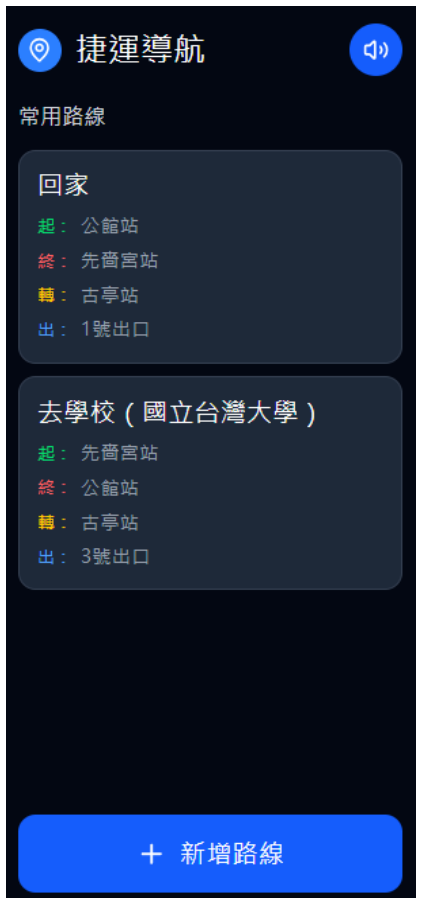

FEATURED PROJECT · 01
讓每一次出發，
多一點自主。
視障者捷運輔助系統
從視障者的通勤情境出發，探索語音、震動與步驟式導引，如何讓移動更容易理解。
黃聿瑄 · 國立臺灣大學圖書資訊學系
ACCESSIBLE
MOBILITYHCI / UX DESIGN
MOBILITYHCI / UX DESIGN

介面原型節錄 / 人機互動專案
人 × 資訊 × 互動HUMAN-CENTERED EXPLORATIONSRESEARCH / DESIGN / STORIES
THE COLLECTION
精選作品
每個問題，都是一段探索的開始。
BEHIND THE WORK
你好，我是
黃聿瑄。
關注人如何取得資訊，
以及設計如何回應真實需求。
就讀國立臺灣大學圖書資訊學系，研究興趣涵蓋人機互動、使用者經驗、無障礙資訊服務、資訊行為與知識管理。
從捷運輔助原型到企業知識稽核，我透過研究、分析與設計，探索人與資訊之間的關係。目前希望進一步研究無障礙數位資訊服務中的多模態互動設計。
HCI & UXAccessibilityInformation BehaviorKnowledge Management
閱讀完整履歷與研究計畫 ↗LET’S CONNECT